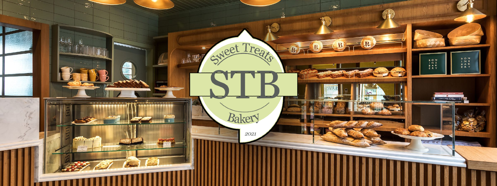

PENGENALAN
Sweet Treats Bakery Merupakan Bakery yang di bangunkan oleh bekas pelajar Adtec di Adtec JTM Kampus Kuala Langat yang menjual banyak pencuci mulut, pastri dan banyak lagi. Kami telah berkhidmat kepada masyarakat selama bertahun-tahun dengan hidangan yang paling manis. Kedai kami telah mendapat banyak ulasan dan reaksi positif daripada semua jenis pelanggan.